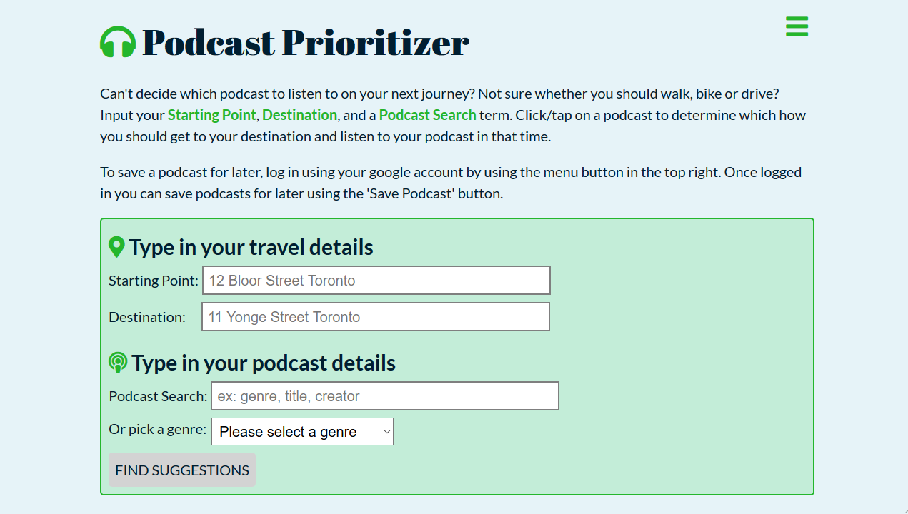

TAKE A LOOK AT
MY PROJECTS

Stock Market
Technologies Used:
- React
- REST API
- ChartJS
- Completely built with hooks and functional components
- Emulates time passage, and stock prices update randomly as each "day" passes
- Real-time updates on stock and portfolio performance, visualized with interactive charts
- LIVE PREVIEW
- REPO

Technologies Used:
Podcasr Prioritizer
Technologies Used:
- React
- REST API
- FIREBASE
- GOOGLE AHENTICATION
- Uses the MapQuest and ListenNotes API to get route times and filter podcast search results based on travel time
- Google Authenitcation service allows users to sign in and save podcasts to a list, stored in Firebase
- LIVE PREVIEW
- REPO